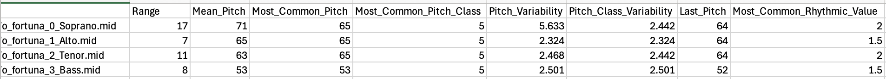
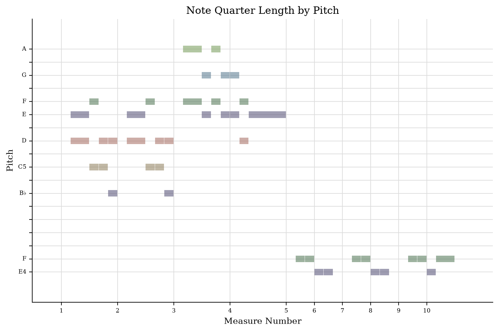
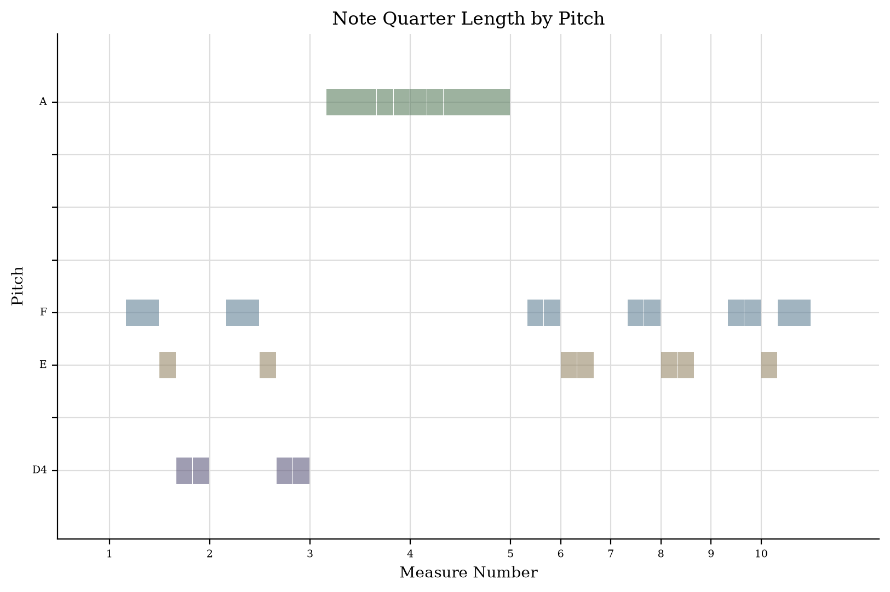
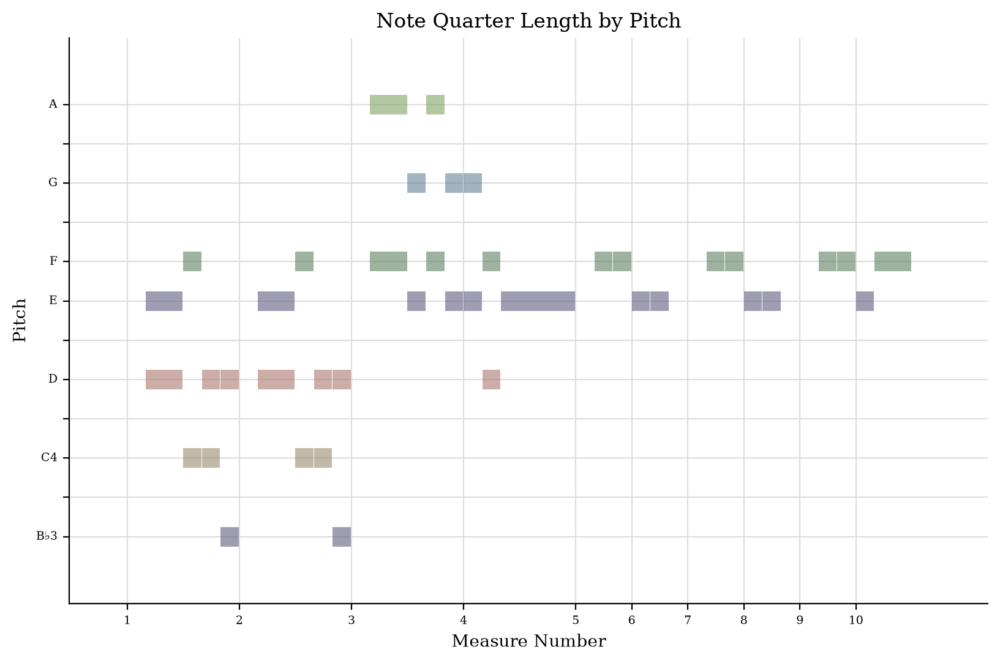
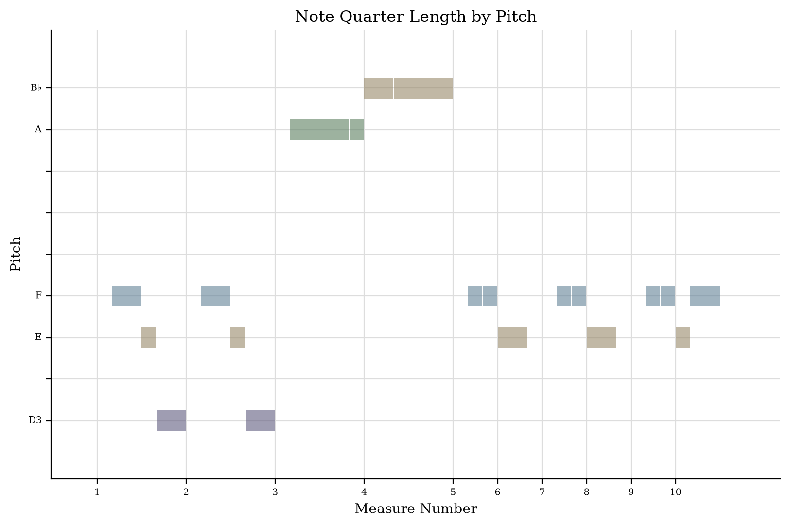
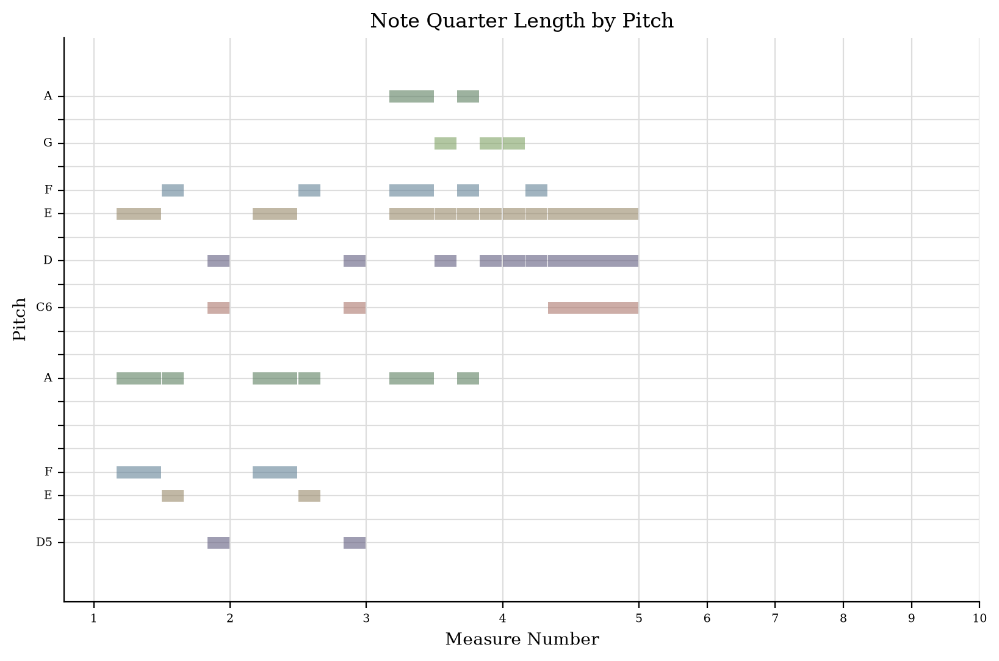
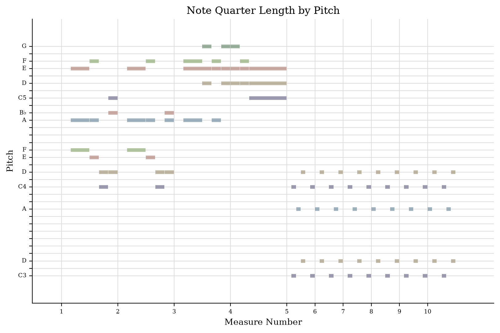
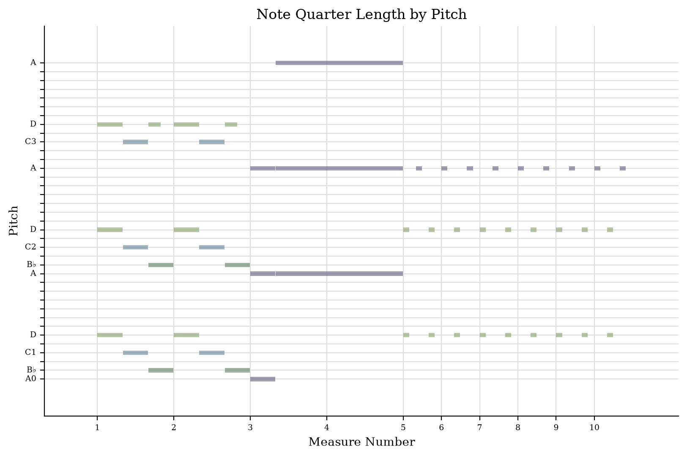
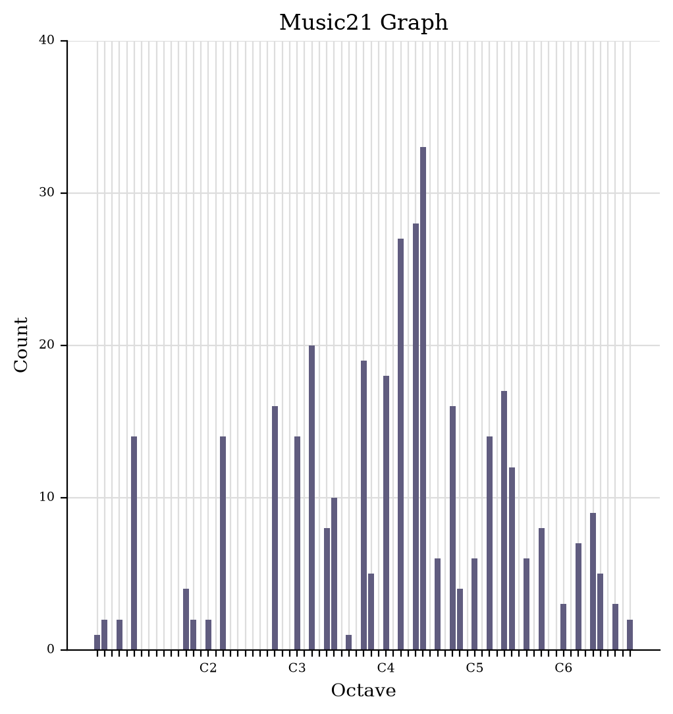

MCA-2026: Carmina Burana by Carl Orff
[FINISH REFLECTION for both tasks!]
| JSymbolic result | Description |
|---|---|
| Range: 72 | (Difference in semitones between the highest and lowest pitches.) |
| Mean_Pitch: 61 | (Mean MIDI pitch value, averaged across all pitched notes in the piece. Set to 0 if there are no pitched notes. [60 = middle C]) |
| Most_Common_Pitch: 65 | (MIDI pitch value of the most frequently occuring pitch. [60 = middle C]) |
| Most_Common_Pitch_Class: 2 | (The pitch class that occurs most frequently compared to other pitch classes. A value of 0 corresponds to C, and pitches increase chromatically by semitone in integer untis (e.g. a value of 2 would mean that D is the most common pitch class). Enharmonic equivalents are treated as a single pitch class.) |
| Pitch_Variability: 15.55 | (Standard deviation of the MIDI pitches of all pitched notes in the piece. Provides a measure of how close the pitches as a whole are to the mean pitch.) |
| Pitch_Class_Variability: 3.038 | (Standard deviation of the pitch classes (where 0 corresponds to C, 1 to C#/Db, etc.) of all pitched notes in the piece. Provides a measure of how close the pitch classes as a whole are to the mean pitch class.) |
| Last_Pitch: 52 | (The MIDI pitch value of the last note in the piece. If there are multiple notes with simultaneous attacks at the end of the piece, then the one with the lowest pitch is selected. Set to 0 if there are no pitched notes.) |
| Most_Common_Rhythmic_Value: 2 | (The most common rhythmic value of the music, in quarter note units. So, for example, a Most Common Rhythmic Value of 0.5 would mean that eighth notes occur more frequently than any other rhythmic value. This calculation includes both pitched and unpitched notes, is calculated after rhythmic quantization, is not influenced by tempo, and is calculated without regard to the dynamics, voice or instrument of any given note.) |
Describe any additional insights this data is providing you about your piece:

To identify how parts in music21 p.parts correspond to the parts in my piece of music (i.e. in the MusicXML file), I had to consult with Copilot (documented at the bottom of this page).
Vocal parts:




Piano parts:




Describe what new insights you have gained about your piece:
| Date | AI Tool | Prompt | Result |
|---|---|---|---|
| 14 October 2026 | Microsoft 365 Copilot | In music21, how do the part indices in the parsed data from musicxml correspond to the parts in musicxml itself? I have 5 parts in musicxml and p.parts ranging from p.parts[0] to p.parts[6]. |
I added the following code to my Jupyter Notebook to print out the correspondence between the parts:
|